Marmoraria em Lavras/MG
Marmoraria de alto padrão perto de você
Cozinhas, escadas, banheiros e mesas em quartzitos e mármores nobres, com acabamento em curva e rebaixo italiano. A gente acompanha cada etapa, da escolha da chapa à instalação.
- +20 anosde ofício do sócio Alessandro Guilarducci no setor
- 5,0 no Googlenota máxima em 68 avaliações de clientes
- Fábrica e obraa gente fabrica e também instala, em Lavras e região
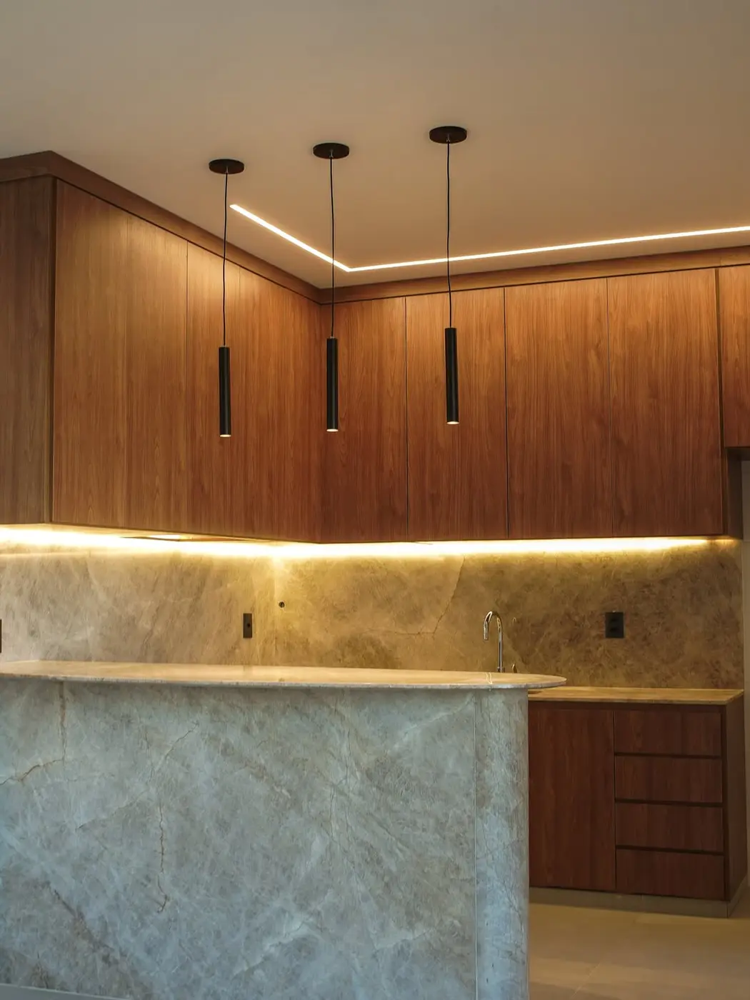
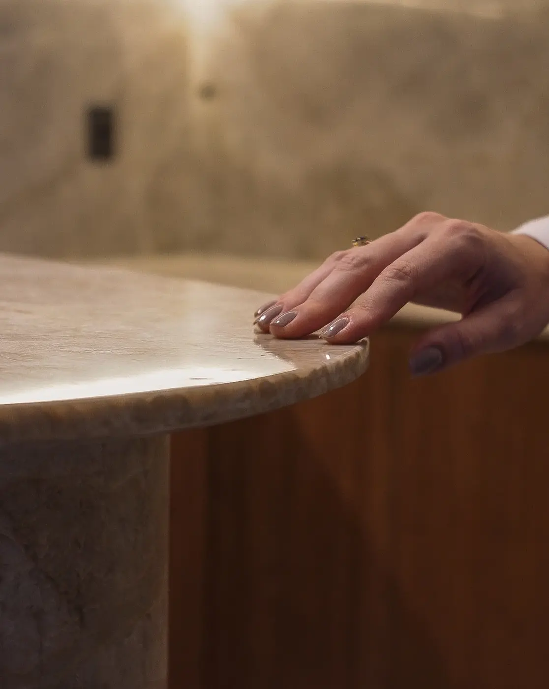
- Quartzito Taj Mahal
- Acabamento em curva
- Rebaixo italiano
- Mármores
- Travertino
- Escadas em pedra
- Mesas de pedra
- Paginação de veios
- Pedras exóticas
Obras entregues
Peças que saíram da nossa fábrica para a casa de clientes
Cozinhas, escadas, banheiros e áreas gourmet em Lavras e região. Nenhuma foto de catálogo: tudo aqui foi fabricado e instalado pela Pedra Forth. Toque na foto para ver em tela cheia.
Nota no Google em 68 avaliações
Avaliações no Google
Quem já tem Pedra Forth em casa conta como foi
-
Excelente atendimento, material de qualidade e ótimo custo-benefício. Eu estava em dúvida sobre qual material escolher, mas recebi toda a orientação necessária e fiquei muito satisfeita com a escolha. O resultado ficou maravilhoso! Minha cozinha ficou perfeita, parecendo aquelas dos programas 'Irmãos à Obra'. Estou apaixonada pelo resultado e recomendo de olhos fechados!
-
Melhor serviço e acabamento que já vi. Em Lavras é muito difícil achar profissionais desse porte. O atendimento então, é espetacular. Eles realmente focam na qualidade e satisfação do cliente.
-
Melhor marmoraria de Lavras e região em disparado! Excelência dês do atendimento até a entrega! Quem preza por qualidade, é exigente e quer um acabamento impecável , recomendo de olhos fechados !
-
Excelente atendimento, materiais de ótima qualidade, preço justo e acabamento perfeito. Entrega no prazo combinado. Pablo está sempre pronto para ajudar.
-
Nunca fui tão bem atendido, o representante da empresa Pablo foi super prestativo, precisava do serviço com urgência e me surpreenderam com a agilidade, a qualidade então nem se fala, tudo perfeito e conforme o combinado. Em breve devo contratar novamente para fazer a cozinha e a área gourmet, recomendo a todos!
-
Excelência em todos os quesitos em um só lugar. Uma marmoraria completa em materiais de muita qualidade, trabalho impecável, acabamento perfeito . Além de um excelente atendimento. São realmente comprometidos com seus clientes. Indico de olhos fechados. A melhor, sem dúvida !
-
Serviço impecável, atendimento com profissionalismo e atenção, entrega dentro do prazo! Parabéns pelo trabalho!
-
Atendimento de excelência. Trabalham com ótimos materiais. Acrescentam ideias aos projetos e realizam um trabalho de grande qualidade.
-
Simplesmente a melhor marmoraria de Lavras e região, qualidade absurda, preço justo e muito profissionalismo.
-
Profissionais atenciosos, comprometidos com a satisfação dos clientes. Fiz toda minha casa com eles e fiquei muito satisfeita. Preço bom e serviço muito bom...
-
Impecável! Desde o atendimento até o pós venda, tudo maravilhoso! Super recomendo!
-
Excelente!!! Serviço de extrema qualidade e atendimento top! Sem dúvidas, uma das melhores empresas que contratei durante a reforma de minha casa!
-
Recomendo, agilidade no orçamento e retorno ao cliente, a quantidade de opções de cores e modelos pra ajudar na escolha para a realização do sonho de uma casa com tudo perfeito, vai além do que pretendíamos, vai te surpreender!
Avaliações reais do perfil da Pedra Forth no Google. Nome abreviado para preservar o cliente.
Ver todas no GoogleO que fazemos
De uma bancada de cozinha a um altar de igreja
Fazemos tudo o que uma marmoraria faz, com destaque para cozinhas e escadas, onde a pedra mais aparece e onde o acabamento mais pesa.
Passe o cursor ou toque em cada item.
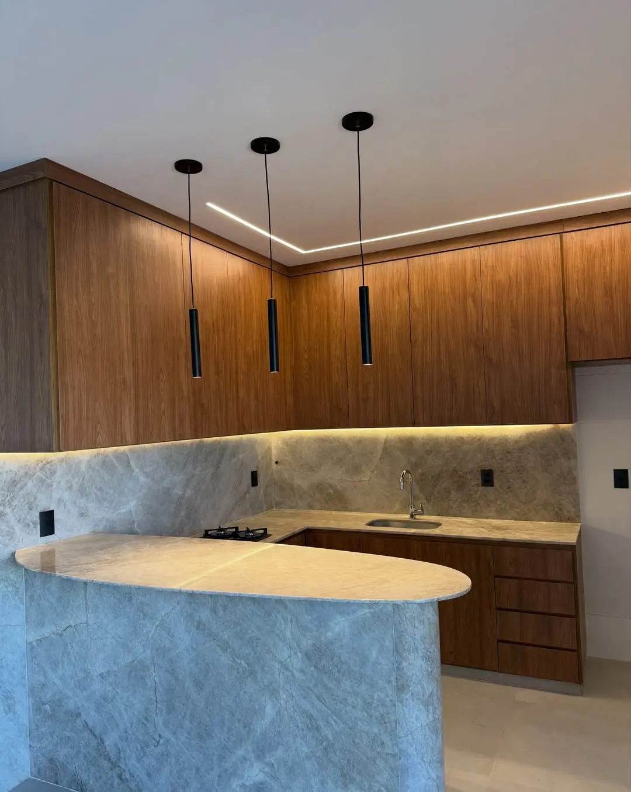
Cozinhas e ilhas
O lugar onde a pedra mais trabalha e mais aparece. Bancadas, ilhas e frontões com o veio contínuo de uma peça para a outra, borda em curva quando o projeto pede e rebaixo italiano junto da cuba.
Orçar cozinha →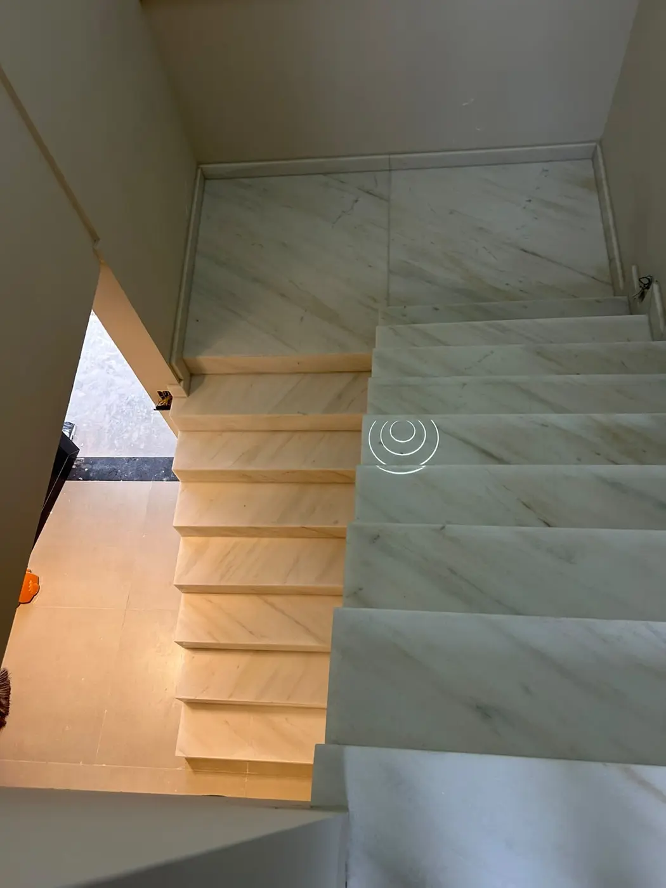
Escadas
Degraus e espelhos cortados para manter o desenho da pedra de ponta a ponta. Escadas retas, flutuantes ou em zigue-zague, com acabamento nos cantos e cada peça sob medida.
Orçar escada →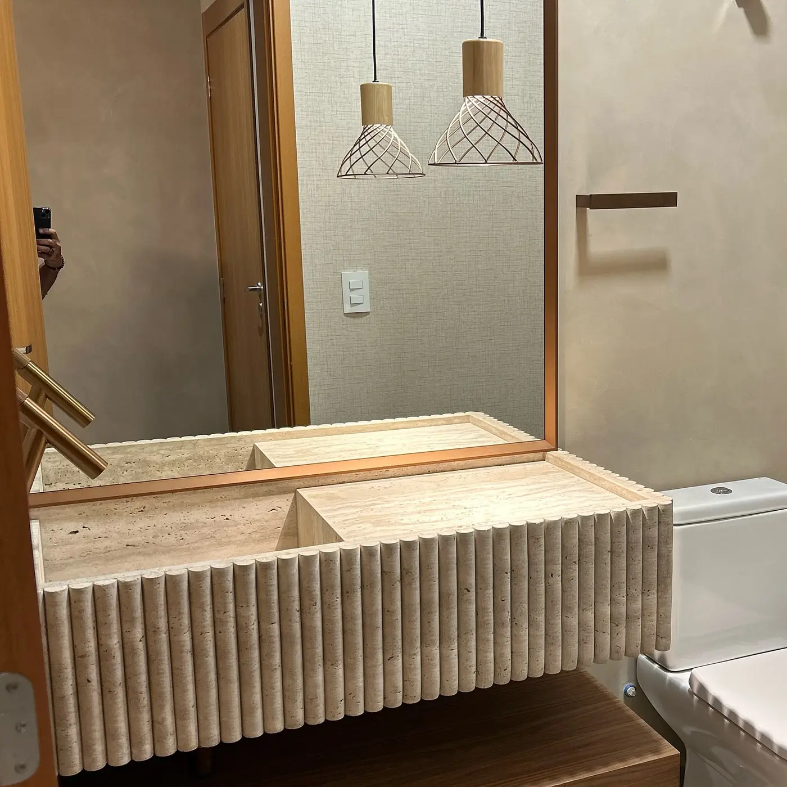
Banheiros e lavabos
Lavatórios esculpidos, frentes ripadas, cubas na própria pedra e revestimento de parede. É peça que fica perto dos olhos, então o acabamento não pode ter marca.
Orçar banheiro →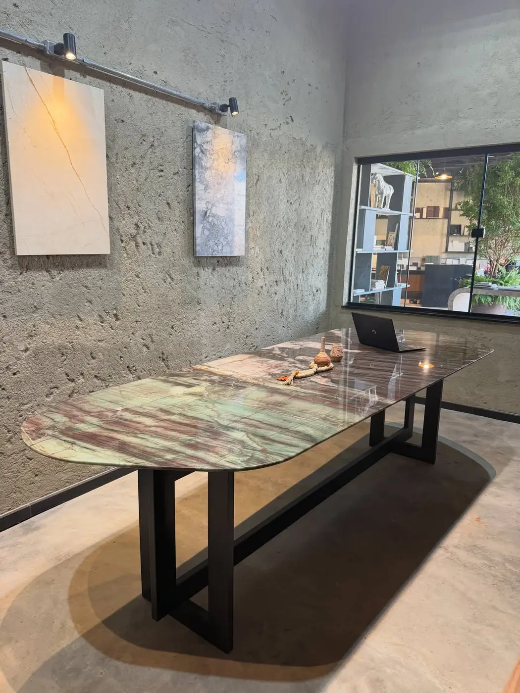
Mesas de pedra
Mesa de pedra é móvel de luxo: tampo com veio escolhido a dedo, borda trabalhada e base pensada para o peso. Tem várias para ver no nosso showroom.
Orçar mesa de pedra →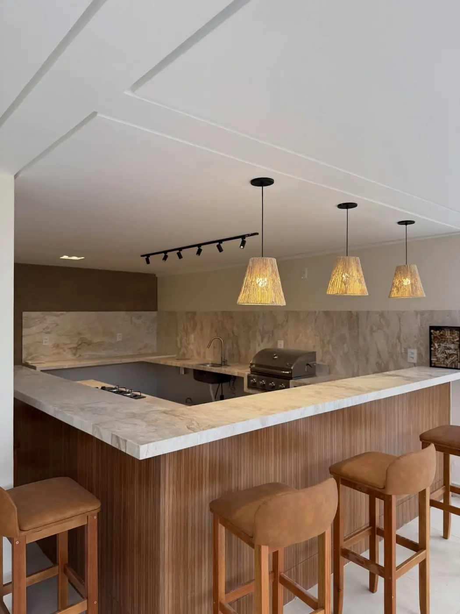
Áreas gourmet
Bancadas para churrasqueira e cooktop, ilhas com assento e frontão em pedra. Escolhemos a pedra pensando em calor, gordura e uso de fim de semana.
Orçar área gourmet →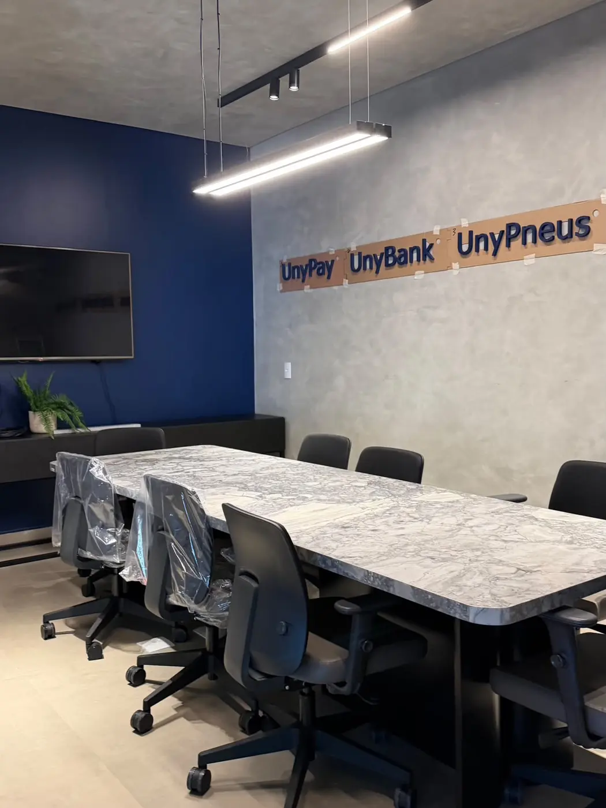
Projetos especiais
Mesas de reunião, peças corporativas, pisos, nichos e até altar de igreja. Se é em pedra natural, a gente estuda e fabrica.
Falar sobre meu projeto →BancadasIlhasFrontõesEscadasLavatóriosCubas esculpidasNichosRevestimentosPisosMesasAltares
Onde o alto padrão aparece
O detalhe que pouca marmoraria sabe fazer bem
Cortar uma chapa qualquer um corta. O que separa uma peça comum de uma peça de alto padrão é o acabamento, e ele depende de acabadores com mão treinada e de tempo de bancada.
-
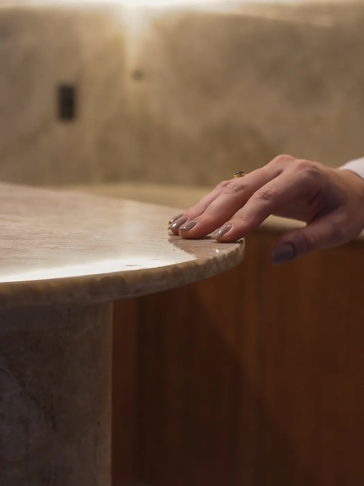
01 Acabamento em curva
Ilhas arredondadas, colunas e bordas com raio são cortadas em etapas e polidas à mão até a curva ficar contínua, sem facetas. É a nossa especialidade, e é onde um acabador sem experiência deixa marca.
-
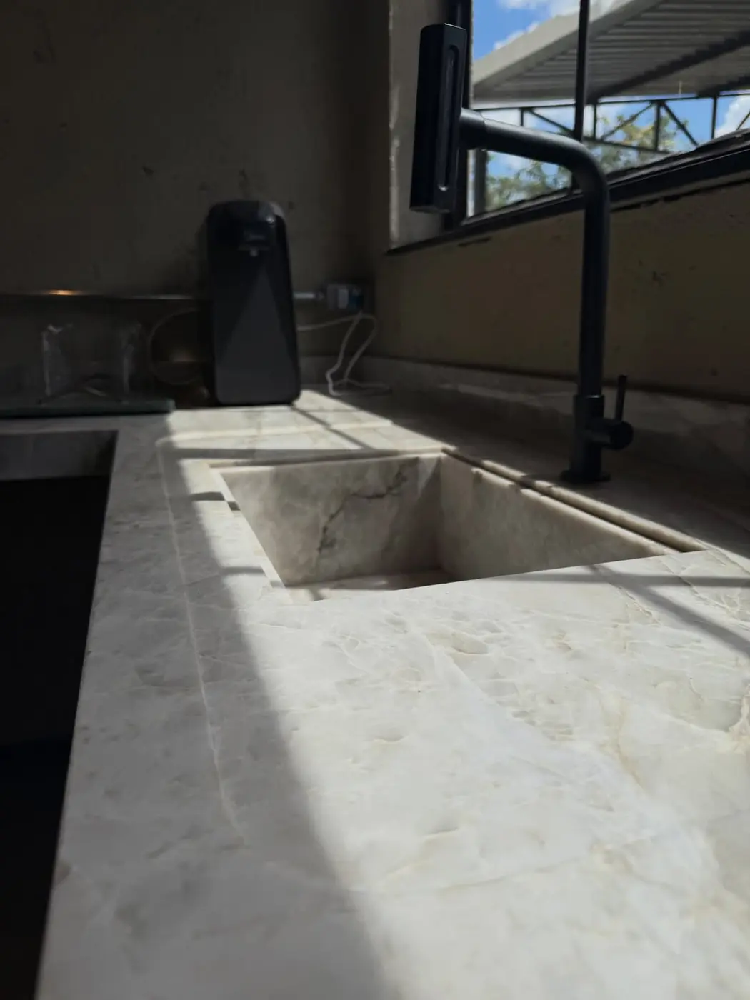
02 Rebaixo italiano
Uma área rebaixada esculpida na própria bancada, com caimento suave para a cuba, que funciona como escorredor. Custa mais porque a pedra é desbastada em níveis diferentes e polida por dentro, peça a peça.
-
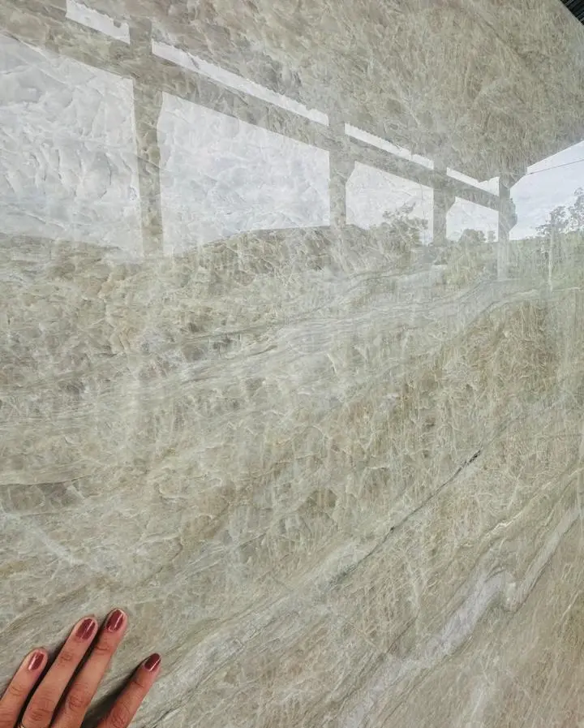
03 Paginação dos veios
Antes de cortar, a gente estuda a chapa inteira para o desenho da pedra continuar de uma peça para a outra: da bancada para o frontão, de um degrau para o próximo.
Não se trata apenas de cortar uma chapa e fabricar uma bancada. Existe um estudo estético por trás de cada projeto: a paginação, a continuidade dos veios, a harmonia visual e o melhor aproveitamento do material.
Materiais
Conhecer a pedra vem antes de vender a pedra
Cada pedra tem onde brilha e onde pede cuidado. A gente explica antes, para a escolha combinar com o uso da sua casa, e não só com a foto.
Passe o cursor ou toque em cada pedra.
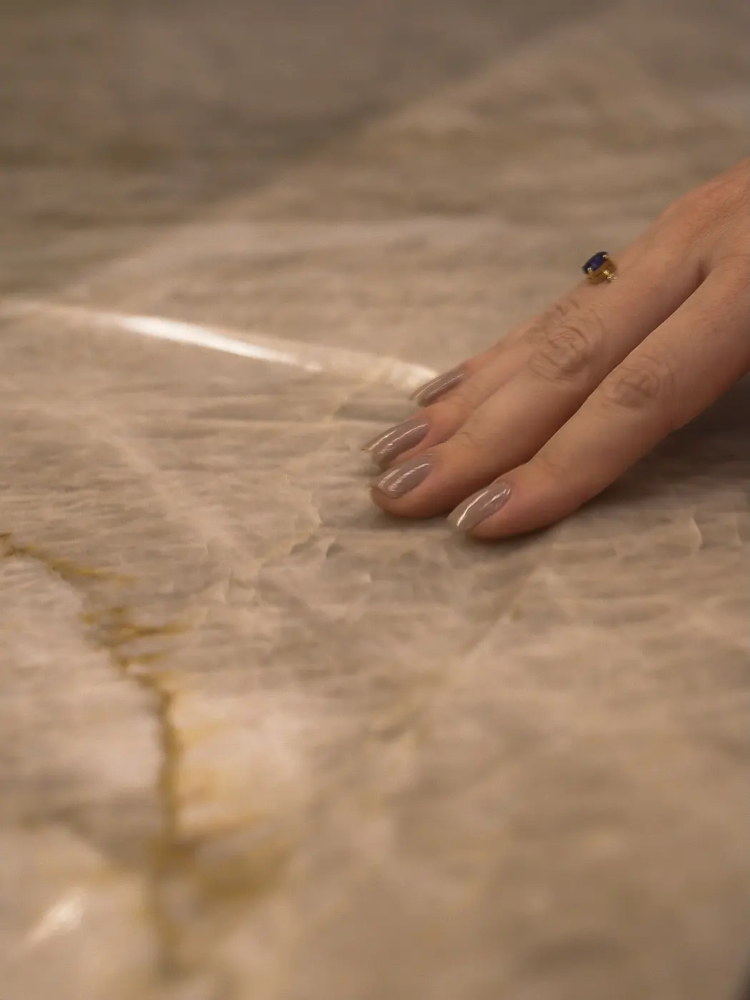
Quartzitos
A pedra das cozinhas de alto padrão. O Taj Mahal das fotos desta página é um quartzito.
- Funciona bem
- Cozinhas, ilhas e áreas gourmet. É uma pedra dura, que aguenta calor e risco no uso normal.
- Pede atenção
- Alguns quartzitos são mais porosos e precisam de impermeabilização. A chapa é cara, e casar os veios pode pedir mais de uma.
- Cuidados
- Limpeza com detergente neutro e impermeabilização refeita conforme a nossa orientação.
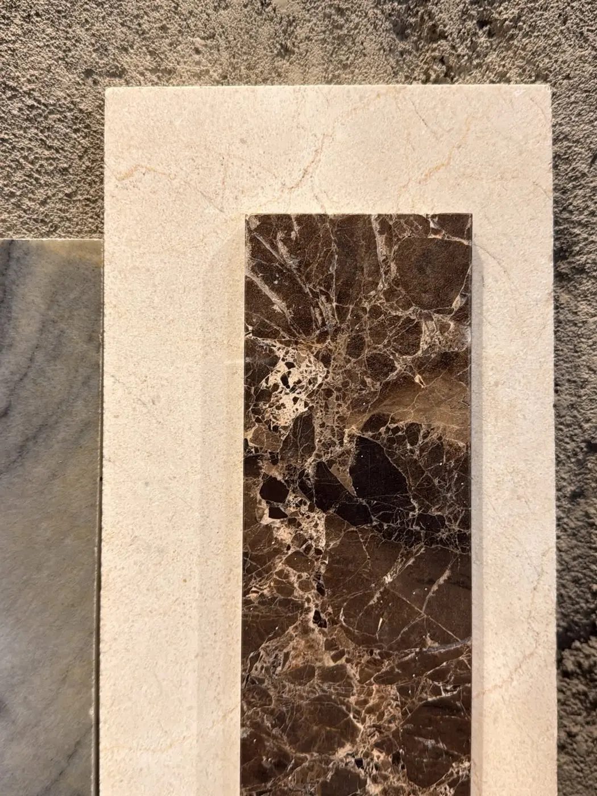
Mármores
Veio clássico e elegância que poucas pedras têm.
- Funciona bem
- Banheiros, lavabos, paredes, pisos internos e mesas de uso mais leve.
- Pede atenção
- Mancha com líquidos ácidos, como limão, vinagre e vinho, e risca com mais facilidade. No polido, o ácido tira o brilho.
- Cuidados
- Secar respingos logo, manter impermeabilizado e evitar produtos ácidos ou abrasivos.
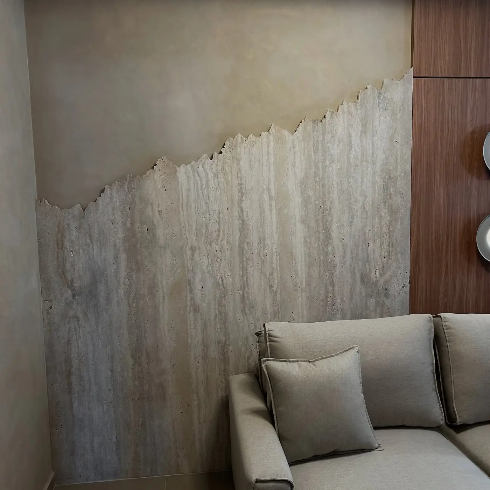
Travertino
Textura natural e cor quente, ótimo para ripados e revestimentos.
- Funciona bem
- Lavatórios, frentes ripadas, revestimento de parede e pisos internos.
- Pede atenção
- Tem poros naturais, preenchidos na fabricação, e é sensível a ácido como o mármore.
- Cuidados
- Detergente neutro e impermeabilização. Evite produtos ácidos na limpeza.
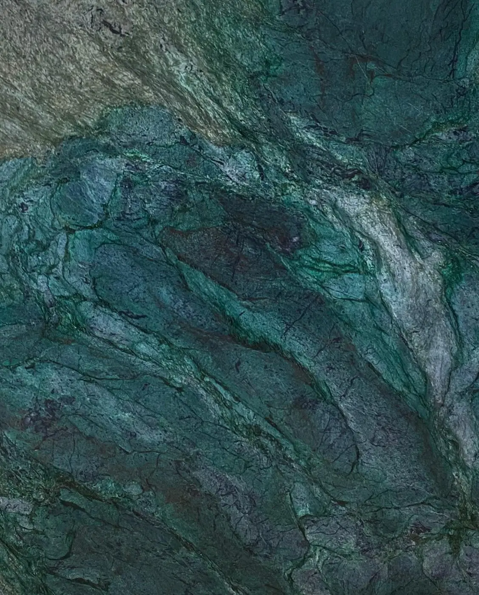
Pedras exóticas
Chapas raras, de cor e desenho marcantes, para quem quer uma peça única.
- Funciona bem
- Ilhas, lavabos, mesas e paredes de destaque, onde o desenho da pedra é o protagonista.
- Pede atenção
- Cada chapa é diferente: o projeto precisa valorizar o desenho e a disponibilidade varia.
- Cuidados
- Dependem da família da pedra. A gente orienta na entrega da peça.
Também trabalhamos com granitos e pedras sinterizadas. Em dúvida entre duas pedras? Traga o projeto ou venha ao showroom, a gente ajuda a escolher pelo jeito que você vai usar o ambiente.
Quero ajuda para escolher a pedraComo funciona
Do primeiro contato à instalação
Atenção ao cliente durante todo o processo de fabricação e instalação é o que a gente mais cuida. Você sabe em que etapa a sua peça está.
- 01
Primeiro contato
Você manda projeto, medidas ou uma foto de inspiração pelo WhatsApp.
- 02
Escolha da pedra
No showroom você vê chapas e acabamentos de perto e decide com a gente.
- 03
Orçamento
Calculamos quantas chapas o projeto pede, já pensando na paginação dos veios.
- 04
Medição técnica
Medimos no local para cada peça sair na medida exata da obra.
- 05
Fabricação
Corte, curvas, rebaixos e polimento feitos por acabadores experientes.
- 06
Instalação
A qualidade da fabricação, agora também na instalação da sua obra.
Depende da negociação, da fila de fabricação e da complexidade da peça. Curvas e rebaixos pedem mais tempo de bancada. O prazo da sua obra vem informado no orçamento.
Pedir orçamento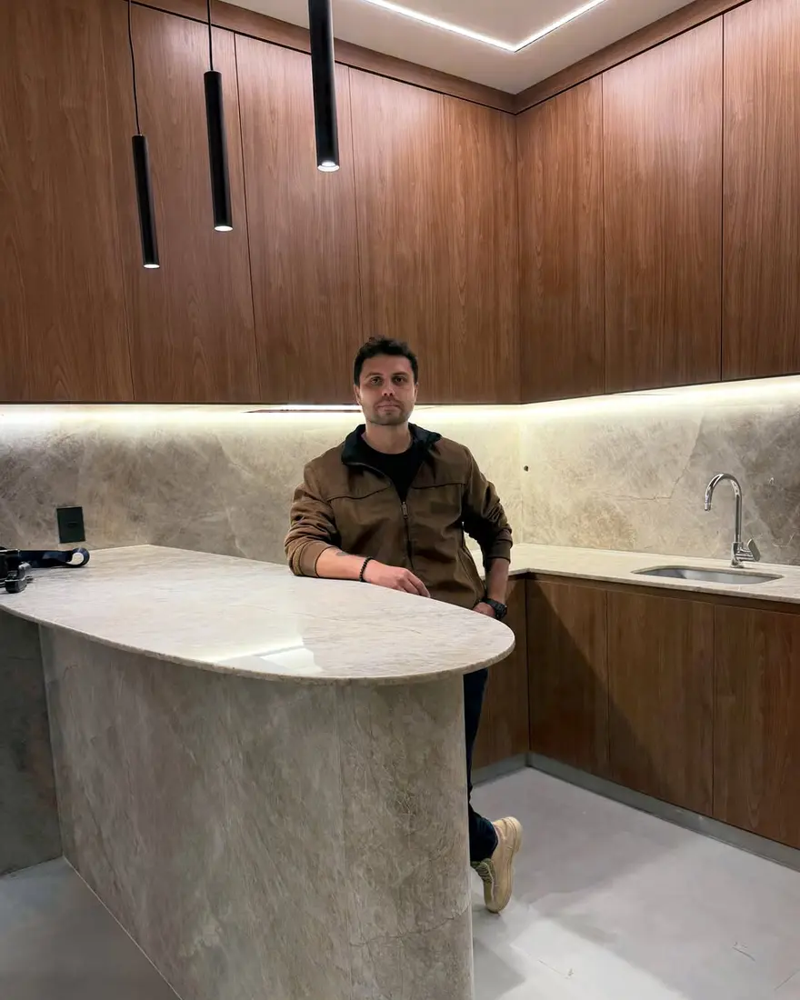
Quem está por trás
Visão de mercado e mais de 20 anos de pedra
A Pedra Forth nasceu em Lavras da soma de duas trajetórias. Pablo Guilarducci passou 12 anos no mercado financeiro, como gerente de investimentos, e largou tudo para abrir a marmoraria com o tio e sócio Alessandro Guilarducci, que tem mais de duas décadas no setor de marmoraria.
Daí vem o jeito da casa: técnica de quem conhece a pedra e o cuidado de quem sabe que uma cozinha ou uma escada em quartzito é um investimento. Por isso a gente acompanha o cliente de perto e confere o acabamento final peça por peça.
Atenção do início ao fim
O cliente é acompanhado durante toda a fabricação e a instalação.
Acabamento final
É a parte que a gente mais confere antes de a peça sair.
Pedra nobre
Quartzitos, mármores e chapas especiais, escolhidos com você.
Preço justo
Sem promoção de vitrine: o valor reflete a pedra e o acabamento.
Na Revista Elitte Sul de Minas. A cozinha em quartzito Taj Mahal que abre esta página também foi destaque na revista, como exemplo de design e técnica em pedra natural.
Showroom
Venha ver a pedra de perto antes de decidir
Chapa em foto engana. No showroom você vê cor, veio e acabamento com luz de verdade, toca nas amostras, senta nas mesas de pedra e conversa com quem vai fabricar a sua peça.
- Tour pelo showroom
- Endereço
- Rua Antônio Virgilino, 275, Aquenta Sol, Lavras/MGCEP 37202-874 · próximo à Youx e à Verde Campo
- Horário
- Segunda a sexta, das 7h às 17h
- Atendemos
- Lavras e regiãoEntregamos também em outras cidades
Parcerias
Para arquitetos, designers de interiores e construtoras
Mande o projeto e a gente devolve com a quantidade de chapas, a proposta de paginação e o orçamento. Na obra, trabalhamos junto com o seu cronograma.
- Visita ao showroom com o seu cliente para escolher a chapa
- Estudo de paginação e aproveitamento antes do corte
- Detalhes de alto padrão: curvas, rebaixo italiano, ripados e cubas esculpidas
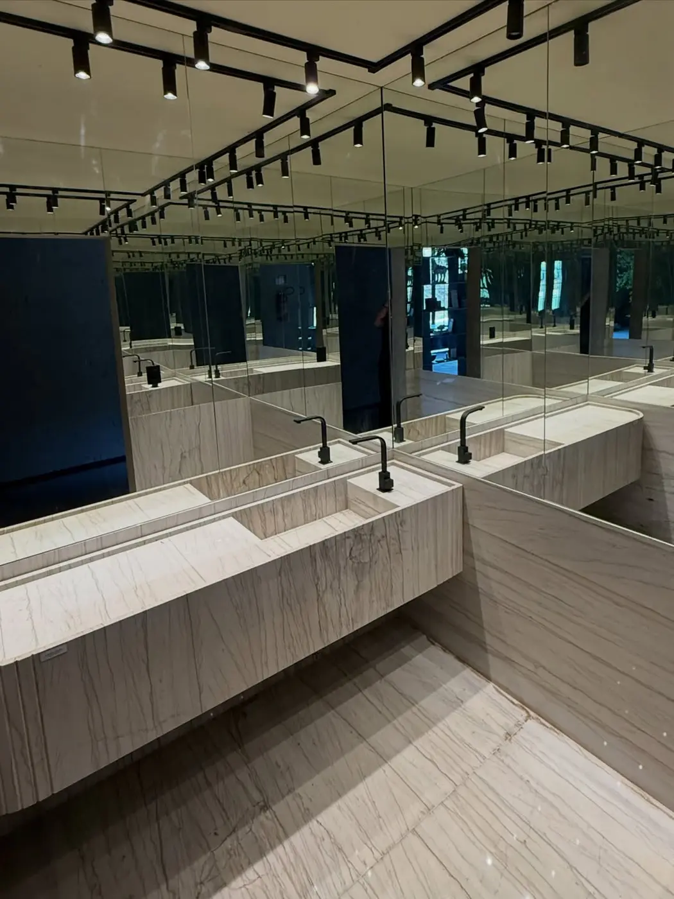
Dúvidas
Dúvidas que chegam no nosso WhatsApp
Não achou a sua? Pergunte direto, a gente responde no horário de atendimento.
Tirar uma dúvidaVocês entregam em outra cidade?
Sim. Atendemos Lavras e região e também entregamos em outras cidades. Conte onde é a obra no pedido de orçamento.
Qual o prazo de entrega?
Depende da negociação, da fila de fabricação e da complexidade da peça. Curvas e rebaixos, por exemplo, pedem mais tempo de bancada. O prazo da sua obra vem informado no orçamento.
Vocês instalam ou só fabricam?
Fabricamos e instalamos. Bancadas, escadas, nichos e as demais peças saem da nossa fábrica e são instaladas na sua obra.
Por que o orçamento pode usar mais chapa do que eu imaginava?
Porque cada projeto é estudado chapa a chapa. Para os veios ficarem contínuos e a composição bonita, às vezes é preciso usar mais material do que o previsto, e isso entra no valor. A gente mostra o porquê antes de você fechar.
Por que o rebaixo italiano custa mais?
Porque a pedra é desbastada em níveis diferentes e polida por dentro do rebaixo, um trabalho lento, feito por acabador experiente. O resultado é uma bancada sem degraus, com o escorredor esculpido na própria pedra.
Posso visitar o showroom?
Pode, e a gente recomenda. Estamos na Rua Antônio Virgilino, 275, no Aquenta Sol, em Lavras, de segunda a sexta, das 7h às 17h. Avise pelo WhatsApp antes para a gente te receber com calma.
Preciso ter um projeto pronto para pedir orçamento?
Não. Pode mandar o projeto do arquiteto, só as medidas ou uma foto de inspiração. A gente ajuda a partir daí e faz a medição técnica no local.
Quais pedras vocês trabalham?
Quartzitos, mármores, travertino, pedras exóticas, granitos e pedras sinterizadas. Se estiver em dúvida, a gente orienta pelo uso que o ambiente vai ter.
Vocês fazem promoção?
Não trabalhamos com promoções. O valor reflete a pedra escolhida, o projeto e o nível de acabamento.
Orçamento
Conte o seu projeto e receba o orçamento no WhatsApp
Com essas informações a gente já começa a estudar a pedra e a quantidade de chapas. Se ainda não sabe o material, marque que quer orientação.
Tem uma inspiração salva? Manda pra gente.
Print do Pinterest, foto de revista ou o projeto do arquiteto. A gente diz qual pedra e qual acabamento chegam lá.